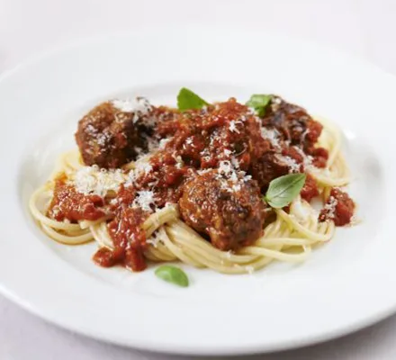

meatballs

Description
BBC Good Food magazine's food editor Barney & his daughter
Maisie love making these sausage and beef meatballs
to serve on spaghetti with hidden vegetable tomato sauce
Ingredients
- 1 small onion
- 1 carrot
- 1 tbsp dried oregano
- 500g lean beef mince
- 1 medium egg
- 2 sticks of celery (grated)
- 2 red peppers
- 1 tbsp tomato purée
- pinch golden caster sugar
- 3 x 400g tins chopped tomatoes
step
- Get your child to squeeze all the
sausagemeat out of the skins into a large bowl.
They can hold the sausages or do it by squashing them on a board.
- Get grating. Get your child to coarsely grate the onion and finely grate the carrot. If the onion starts to hurt their eyes, get them to wear goggles, which is good fun. Grating can take a bit of strength, so you may need to help. Tip these vegetables in with the sausages.
While you have the grater out, grate the Parmesan,
other vegetables and garlic for the sauce, and set aside
- Make a marvellous mix. Next, get your child to add all the other meatball
ingredients one by one, except the olive oil,
into the bowl and season with black pepper.
- Squish everything together. Get the child to squish everything together through their hands until completely mixed.
Keep an eye on younger children to make sure that
they don’t taste any of the raw mix.
- Roll meatballs. Children as young as three can now roll the meatball mix into walnut-sized balls, then place them on a board or tray. This mix should make 40 balls – counting these is great way
to help teach older children basic division.
Cover the meatballs with cling film and have a little tidy up.
- Prepare the red peppers. Firstly, peel the peppers with a vegetable peeler, cut off the tops and bottoms and remove the seeds.
Cut the peppers in half and children from
the age of four can cut the peppers into strips.
- Make the sauce. A grown-up will need to help here. Heat the oil in a large saucepan. Add the vegetables and garlic and cook for 5 mins. Stir in the tomato purée, sugar and vinegar, leave for 1 min then tip in the tomatoes and simmer for 5 mins. Get the child
to help blitz the sauce
with a hand blender. Gently simmer
the sauce while you cook the meatballs.
- Cook the meatballs. Brown the meatballs in the olive oil on all sides then pop them into the sauce, working in batches if necessary. Simmer the meatballs in the sauce for 15 mins, gently stirring until they are cooked through. It’s ready to eat
now or cool and freeze in suitable batches for up to 6 months.
Serve with spaghetti, some basil and extra Parmesan, if you like.